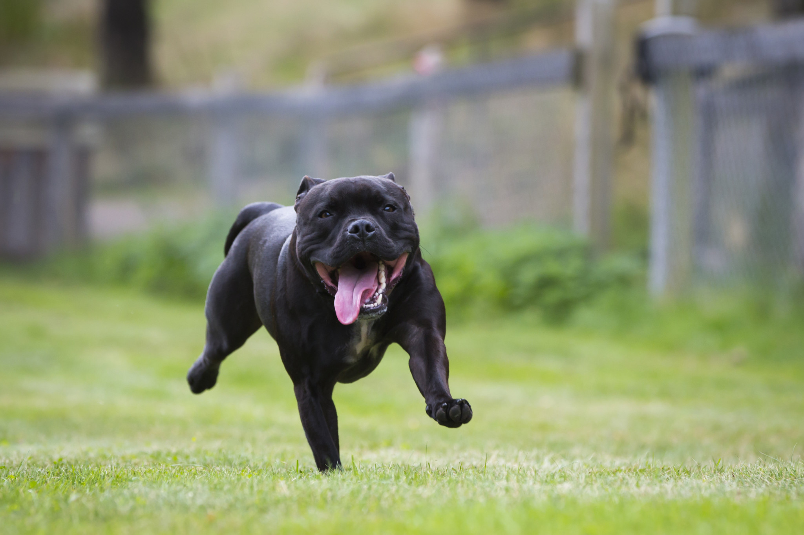
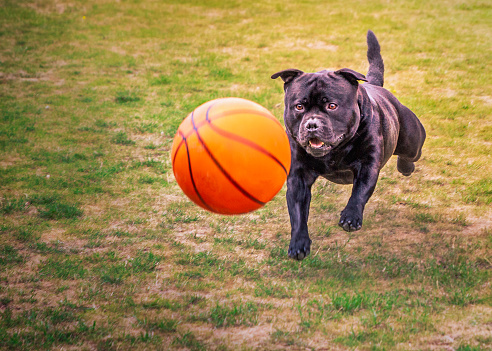

Hundrasen Staffordshire bullterrier kommer från Storbritannien, på pratspråk kallas den Staffe. År 2012/13 gjordes en undersökning av vilka hundraser som vart mest populära, Staffordshire bullterrier var bland de 30 mest populära hundarna i världen. I Sverige så var den t.o.m. i top 20 av de mest populära hundraserna. I vissa länder är Staffordshire bullterrier dock förbjuden, t.ex. i Portugal och vissa delstater i USA.
Staffordshire bullterrier är en släthårig ras, som för sin lilla storlek är väldigt stark. Den är ofta muskulöst utpräglad, men dessutom spänstig och aktiv. Röd, fawn, vit, svart eller blå eller någon av dessa färger i kombination med vitt. Brindle i alla nyanser, även i kombination med vitt är godkända färger på en staffordshire bullterrier. Leverbrunt, tricolor eller svart med tantecken är absolut inte önskvärt.
